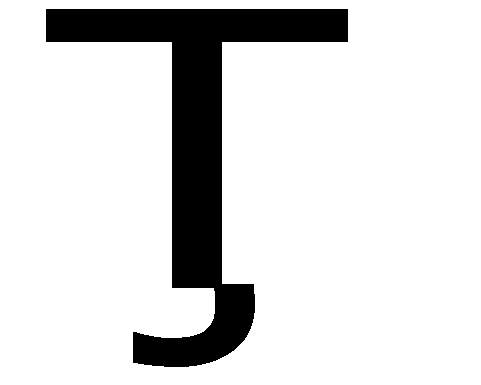
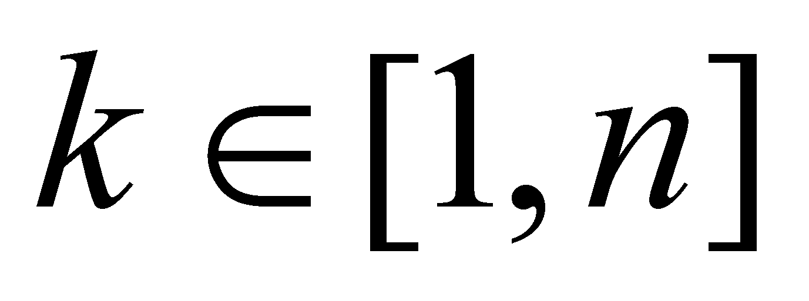

|
|
|
The attributes of the real objects can be divided in two categories:
Transmissible attributes, which can be transmitted (transferred through a flux) from one object to another, during a process which is named transaction;
Non-transmissible attributes, which remain specific to that particular object (stored inside it) until the expiry of its lifespan.
For becoming transmissible, an attribute must be carried by an open flux, that is a transfer process from one location (position) to another, and obviously, the flux must exist between the real objects which undergo an attribute exchange. Among the transmissible attributes, the energy and information are the most important ones for the objectual philosophy.
When we described the SM model, we saw that a real agent flux which covers the system’s RBS generates a change on the internal state first, and then, on the external state, change which is called action. If the state changes occur in two MS as a result of the mutual actions of the fluxes released by the two MS and mutually received, we are dealing with an interaction process.
As it was noticed at the description of the generic IPS model, each distinct flux type released by a MS and which can be perceived (noticed, detected) by that IPS, it means a distinct qualitative attribute of that emitting MS. These material fluxes released by a MS and partly received by IPS, represent the support of the information associated by IPS to the perceived material system, and the certification (undertaken also by IPS) on the existence of this MS shall take place as a result of receiving this information.
Taking into account the above-mentioned issues, this means that the transmissible attributes are related to active (open) fluxes as their material support, and the non-transmissible ones have closed fluxes as their support, or objects placed inside the object to which they belong to. As for the interactive systems, the flux exchange processes (of transmissible attributes) which take place during the interaction are also named transactions because they are similar with the processes of assets exchange developed in the economic-financial field.
For beginning the study of the transaction process, a classification of their phases (stages, states) would be required:
Initial state Si when there was no exchange between the two objects, and the transmissible attribute (which may be transacted) of each object is stored inside the object, this attribute stockpile representing the result of the previous transactions. Under this state, the two objects may be considered completely isolated (in terms of the transmissible attribute);
Transaction process (interaction) during which the transmissible attribute fluxes are transferred from one object to another;
Final state Sf , occurred after the completion of the transfer process, in which the two objects have another distribution of the transmissible attribute as compared to the initial state (a modification of the internal stockpile), and where once again, the two objects are isolated (until the next transaction).
An important observation: the two states which limit (as any other SEP) the transaction process both belong to the same processual class (in case of the “physical” interaction processes, they can be two positions, two velocities etc.).
Let us assume that there are two objects ObA and ObB which own the same transmissible qualitative attribute E, which is assigned (distributed) to the two carrier objects in the initial quantities e1A and e1B. In such circumstances, the abstract object:
(X.10.1)
which represents a distribution with only two elements of the distributed attribute E on the support made-up from the set of the two objects ObA and ObB, is considered as an initial state which is prior to the transaction process. After the process completion, we shall have the following state:
(X.10.2)
The transaction
process between the two objects is a complex process, made-up from
two simultaneous processes (therefore, according to the
classification from chapter 4, there is a collective and specific
process), and since we have information only about the two states,
initial and final, the two simultaneous processes shall be considered
as linear (with even density), namely, two SEP with a common
temporal support
 .
.
By using the transition operator from one state to another [], we shall therefore have:
(X.10.3)
that is the variation process of the attribute E which belongs to ObA, and:
(X.10.4)
similarly for ObB. The states of the two processes (their density) are:
(X.10.5)
and:
(X.10.6)
According to the relations X.10.5 and X.10.6, we may notice that depending on the actual initial and final values, the two variations and may be positive, negative or null, each case being associated with a special denomination in accordance to the current terminology. Thus, if is negative, the transaction in case of the object ObA is considered as unfavourable, and it is favourable if is positive and equitable in case of a null variation.
Comment X.10.1: Now, it is the moment to draw the reader’s attention on a major approach difference regarding the transaction notion (property exchange as a result of a flux), against the classic approach presented in text-books and in other papers. The notion of null transaction cannot exist in the objectual philosophy field, because any property (either objectual or processual) which owns the null quantitative attribute means that it does not exist. The fact that a transaction is made-up from two simultaneous non-zero processes (fluxes) means that these processes exist even if the state variation is null (equitable transaction). In case of this latter transaction, because , the classic approach states that there was no occurrence of property exchange. On the contrary, the objectual philosophy upholds that there was a transfer (transaction) process but, in equal quantities and opposite senses. This approach is used for instance in case of the energy exchange (by means of the energy fluxes) between two MS which are under equilibrium, which deploy static, equal and counter direction forces.
So far, we have discussed only about a transaction deployed between a single couple of objects. In the real world, where there are lots of objects with a simultaneous existence (a DS in which only the proximity elements are in interaction, or a CS in which, besides the interactions with the proximity elements, each element must be also subjected to the permanent interaction with the central system), the transactions can be collective, multiple, simultaneous or successive.
The case of the successive interactions (temporally concatenated) is worth mentioning because the effects generated by this succession are very interesting. Let us assume that we are dealing with the same couple of objects ObA and ObB which were above mentioned, only that, instead of a single transaction, we shall have a series of successive transactions. In this case, we shall take into account the temporal distribution of the attribute transactions of one of the two objects, that is a distribution which represents (as we have seen in chapter 4) a series of concatenated SEP. In case of such a distribution (which is a first rank derived distribution), the primary distribution is represented by the temporal series of the transmissible attribute stock of the researched object, between two transactions. Let us assume that this series for ObA is eA(t1), eA(t2), ... eA(tn), where ,  is the support interval for the aforementioned SEP. There are only two values of the series which are relevant for this topic: initial eA(t1) and final eA(tn). The difference between the two states of the transmissible attribute after a series of transactions shows us what kind of transaction (out of the three above-mentioned types) was prevalent for a particular object. Naturally, if the two states are equal, the object had mostly even transactions, if the difference is negative, the unfavourable transactions have prevailed and if it is positive, the favourable ones were predominant. This predominance of a transaction type for a series of successive transactions which have affected a specific object is the cause of the unevenness of the natural distributions based on Gauss distribution.
As we have mentioned in the annex X.5.4, there is an internal reference in case of these natural distributions, against which the distribution elements can have a property surplus (in relation to the mean value) and elements with a property deficit. The elements with a property surplus took benefits (as a result of the repeated interactions) from a series of prevalently favourable transactions, and the ones with deficit, were affected by a series of predominantly unfavourable transactions. While in case of the natural distributions (such as for instance, the distribution of the molecular velocity rates in a gas), the objects with a property surplus or deficit are not always the same, fact which certifies the process “naturalness” (namely, the lack of an artificial interference on these processes), as regards the distribution of the valuable resources on the humans’ society, the situation is much more different….
Copyright © 2006-2011 Aurel Rusu. All rights reserved.